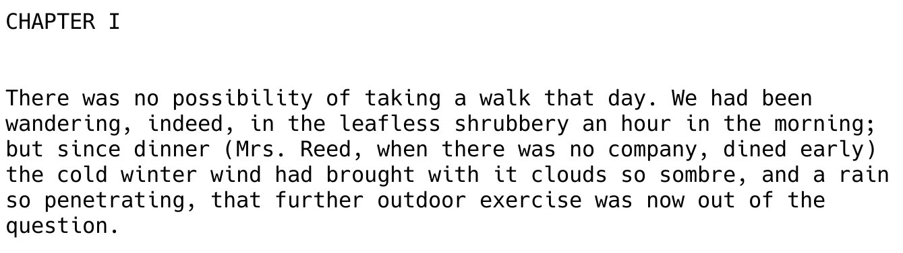
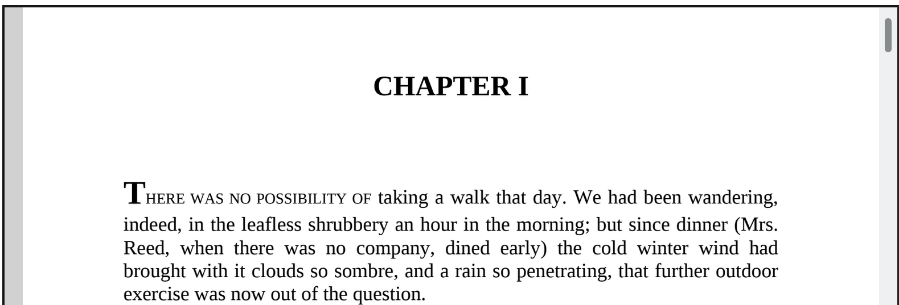
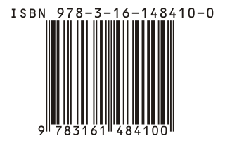
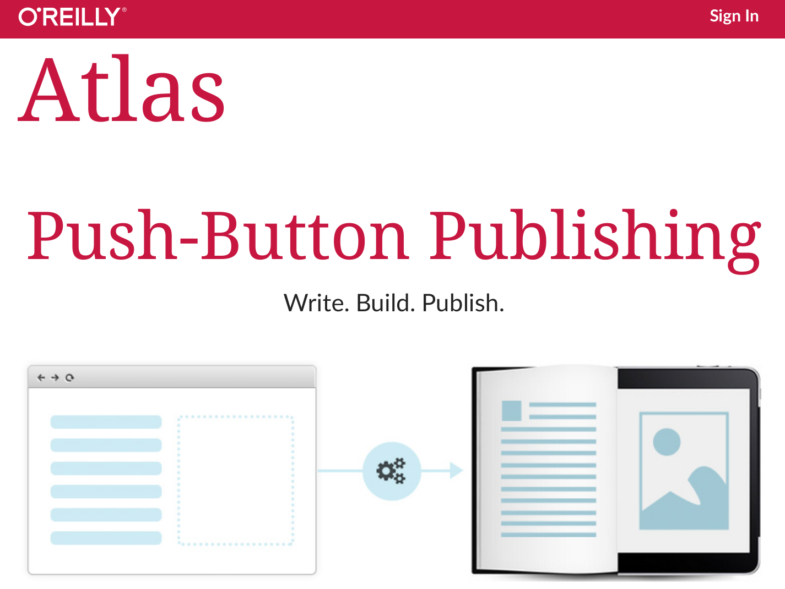

Complex documents
- For academic writing and more complex documents, AsciiDoc may be a better choice:
- Supports footnotes, call-outs, complex tables, math, embedded files etc.

Example:



Short-term benefits:
Long-term benefits:
Markdown is a lightweight markup language based on the formatting conventions used in email
The overriding design goal for Markdown’s formatting syntax is to make it as readable as possible. The idea is that a Markdown-formatted document should be publishable as-is, as plain text, without looking like it’s been marked up with tags or formatting instructions. –John Gruber
Markdown, AsciiDoc, ReStructured Text, Org-Mode, HTML, XML… are all types of text markup that introduce various conventions for formatting text
Most importantly, they allow different methods for introducing minimal structure into plain text documents

More examples: